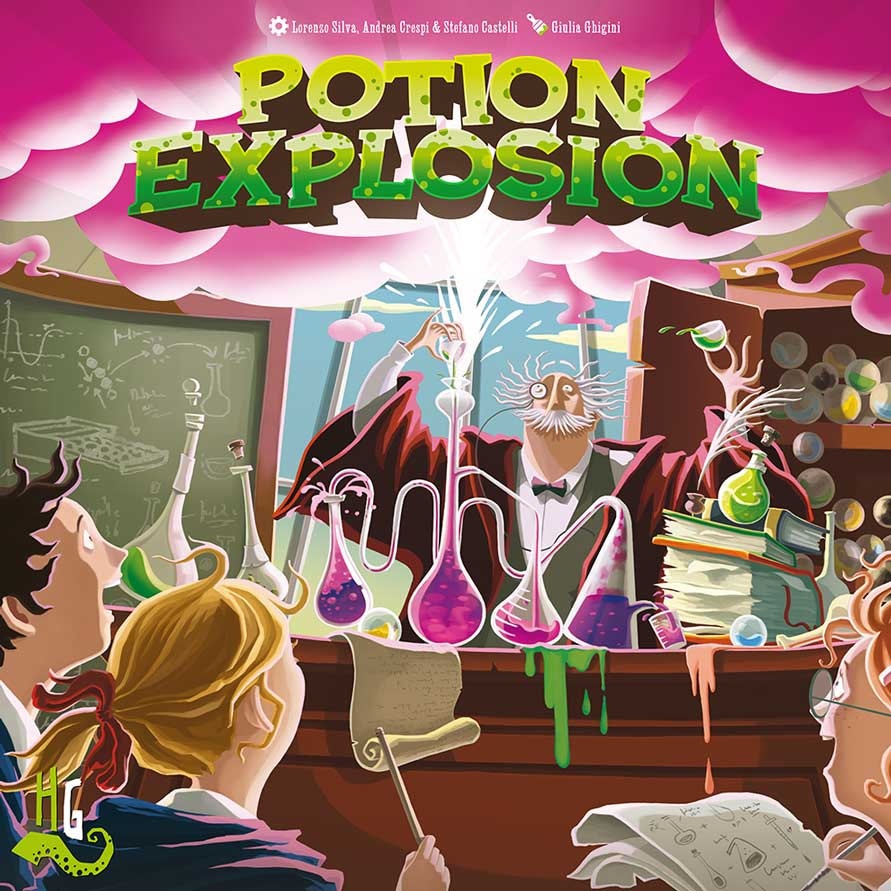
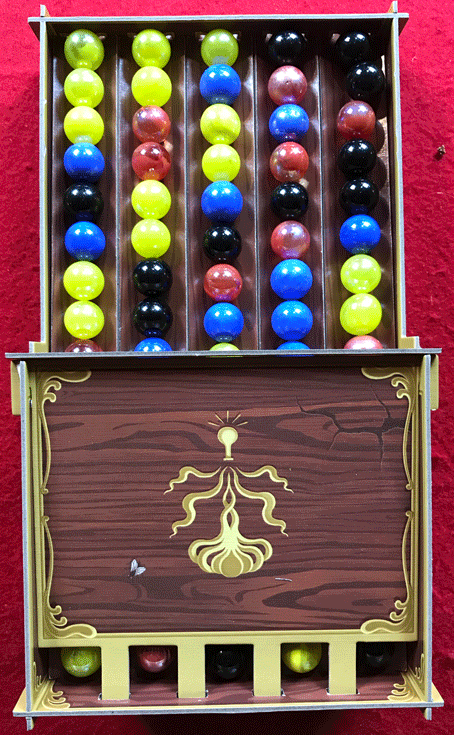
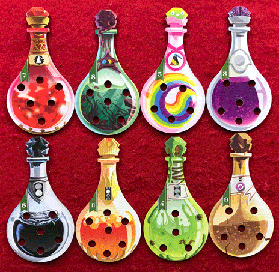
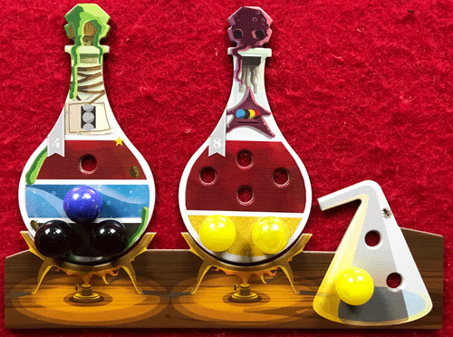
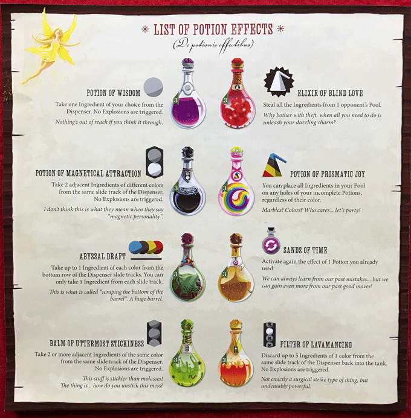
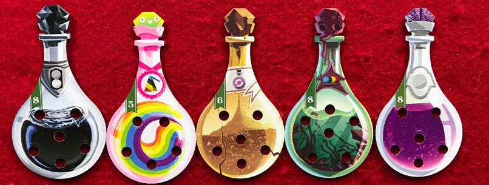
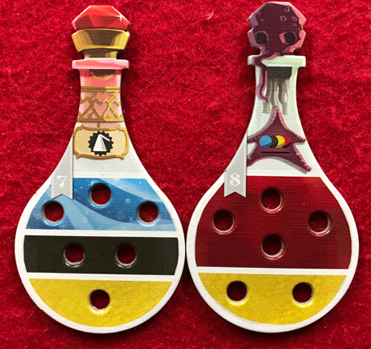
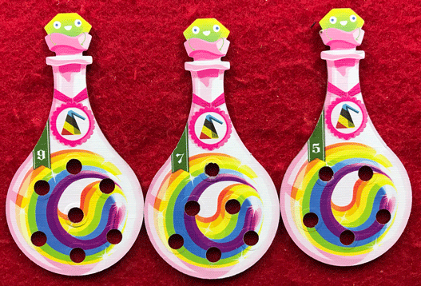

In Board Crazy’s Potion Explosion review, we discuss the enjoyable, marble-filled experience from Horrible Games and CMON. In this game, players draft ingredients (in marble form) in order to complete potions for their final exam. The player who causes the most explosions and brews the best potions will win! Read on below for our thoughts on Potion Explosion.

D reviews Potion Explosion
 (Author’s
note: this review is meant to accompany our gameplay video and will not
go in-depth on the game’s rules. If you’re interested in learning how
the game is played, please watch the video. It’s not bad.)
(Author’s
note: this review is meant to accompany our gameplay video and will not
go in-depth on the game’s rules. If you’re interested in learning how
the game is played, please watch the video. It’s not bad.)
Some of the games we’ve played here for this site have turned out to be pleasant surprises, while others can safely be described as disappointments. Occasionally though, a game comes along that ends up basically being exactly what I expected it to be. Potion Explosion is one of those games. When I first saw an image of its dispenser filled up with marbles, I thought to myself, “boy that looks like a fun and unique mechanic!” But I also figured that the game was probably lacking any significant depth and now, after having played it, I would say that I was pretty much correct in both of my snap judgments.
Part of me wonders if maybe one of the game designers – Stefano Castelli, Andrea Crespi, and Lorenzo Silva – came up with the idea for the marble dispenser first and then built the game around it. And if that happens to be the case, I wouldn’t fault them whatsoever because it’s a really cool mechanic. Grabbing the marbles, watching them slide down the track, hearing them clack together, and stringing together a big combo remain fun and pleasing throughout the entirety of the game. That the potion-brewing game surrounding it is an alright bit of fun in itself is what elevates Potion Explosion from a neat kids’ game to a proper board game worth your time.
Earlier I mentioned that the game was lacking significant depth, and that is true. Once you’ve learned the rules, there really isn’t much left to figure out. There are teensy bits of strategy to consider in regards to marble selection and the potions you choose to brew, but luck ends up playing a fairly prominent role here. Fortunately, the rules are coherent and quite intuitive, and the gameplay moves very quickly, so frustration should be minimal even if the game isn’t going someone’s way. And the various potion effects spice the game up a little bit, giving the players more to consider regarding their opponents. It’s nothing exceptional, but the potion aspect of the game is entertaining enough and matches well with the marble dispenser.
Also, the components are mostly good. The potion bottles are all sturdy and nice to look at, and filling in their holes with marbles is consistently satisfying. The marbles are marbles, so you know what you’re getting there, but the game smartly comes with a couple extras for each color, to replace those that get away. This has already come in handy once for us. The dispenser requires a one-time assembly, which isn’t too difficult to figure out thanks to the diagrams included in the rulebook. It’s all cardboard, though, so you have to be a little bit careful with it. I’d love to see some sort of deluxe version made with hardwood. And the rulebook itself is highly coherent, as I mentioned earlier, but also filled to the brim with little flourishes of humor and personality. I imagine some younger fans of the Harry Potter series would get a kick out of some of the jokes.
So, Potion Explosion is not what I would call a great game, but it is a fun, breezy little experience. It’s highly family friendly, and I could see this being a big hit with children – at least those who are old enough to realize that marbles don’t go in your mouth. It’s cute, colorful, easy to pick up, and fairly replayable. And, once again, the marble dispenser is a really entertaining feature. So if that sounds up your alley, I’d recommend that you check it out.
D’s Rating: Three and One-Half Stars out of Five.
Will reviews Potion Explosion
 If
you’re going to sell a family board game called “Potion Explosion”,
then you need an amusing gimmick. Alas, packaging the game with actual
liquids would be inadvisable. And so, the designers of Potion Explosion
decided to roll with marbles, which I think was a great choice. Picking
marbles from a dispenser, color matching them to brew potions, and then
chucking them back into the dispenser are all satisfying mechanics. Even
if some of the other aspects of the gameplay fall short, this game will
always have the marble factor going for it.
If
you’re going to sell a family board game called “Potion Explosion”,
then you need an amusing gimmick. Alas, packaging the game with actual
liquids would be inadvisable. And so, the designers of Potion Explosion
decided to roll with marbles, which I think was a great choice. Picking
marbles from a dispenser, color matching them to brew potions, and then
chucking them back into the dispenser are all satisfying mechanics. Even
if some of the other aspects of the gameplay fall short, this game will
always have the marble factor going for it.
When I opened up the box, I realized that quite a bit of engineering went into crafting Potion Explosion’s components. Although the dispenser is surprisingly challenging to put together, it’s actually pretty ingenious in design. There’s also a space for the fully constructed dispenser in the box, which was a smart choice. Additionally, the potions themselves are colorful and eye-catching, and the dense cardboard used in their construction is what I’ve come to expect from CMON in regards to build quality. The marbles are also attractive, and the game comes with several extras in case you drop one and it disappears, which actually happened to us. All in all, this game gets plus grades for build quality and visual appeal.
Since Potion Explosion is undoubtedly a game meant for families with children, the gameplay is unsurprisingly shallow, and that’s okay. I really don’t think there’s a way to have a marble-drafting board game that isn’t simple, considering the randomness inherent to that mechanic, so I’m rather content with the gameplay that this game provides. For instance, I really enjoyed when marbles of the same color would slam together, causing an “explosion”. Analyzing the dispenser for the best possible explosion involved more strategy than I expected, and this really led to some memorable moments. Also, I love games that force me to draft something (marbles, dice, tiles, etc.) and match it to specific colors or patterns. In Potion Explosion, it’s usually easy to get the colors you want, and once you place them, you can’t wait to go back for more. Or at least, I couldn’t wait – there’s something alluring about marbles.
After you fill in all of the spots on a potion, you claim that completed potion and hurl the dice on it back into the dispenser. At that point, the completed potion can be drunk in order to gain a special ability, such as taking more marbles or even reusing a spent potion. Having the potions be more than just a device for victory points was a very savvy design decision. While there isn’t too much variety in what the potions can do, they add just enough to the game to make it a rounded experience for all ages. Whoever utilizes their potions in the smartest way will likely win Potion Explosion. Again, there’s more strategy involved than I initially expected, which is pleasing.
Unfortunately, Potion Explosion is not without its flaws. For instance, it’s really easy for one or two columns of the dispenser to be used more than the others. Since the marbles are arranged randomly, there can sometimes be columns that are more attractive than others. Usually, a selfless player will go out of their way to get the other columns involved, but they shouldn’t have to do that. “Random” seems to be a word I keep coming back to, and that’s because it’s entirely appropriate. Randomness and luck are big elements of Potion Explosion’s gameplay, which can be off-putting at times, even for players who enjoy the “luck factor”. In any one session, it’s very possible for one player to have several huge explosions, while another has none. Sure, games like this are meant to be played many times, but I could see some people becoming disheartened early on because of the randomness.
In the end, if you can’t appreciate random, simple board games, then you probably won’t care for Potion Explosion. Personally, I’m grateful that I was able to come into this game with an open mind and few expectations. In my opinion, the marble-drafting alone is worth the price of admission. The clickety-clack noises that occur during every explosion are more satisfying than I care to admit. I guess there’s just a level of catharsis that comes from playing with marbles. So far, Potion Explosion hasn’t been that kind to me, but I still want to play it (and the expansion). It’s not a game that will ever be able to break into the highest tiers of board gaming, but for what it is, it’s pretty darn good.
I give Potion Explosion a: B
Graham reviews Potion Explosion

We’ve seen card drafting, dice drafting, and even tile drafting, but we’ve never seen marble drafting. Potion Explosion’s innovative and interesting mechanic really helps carry a game that’s ultimately plain and a little forgettable. This game is completely reliant on its gimmicky mechanic to keep you engaged and interested, and the thing is, it actually works. It’s extremely satisfying to pick your marble, see the next ones roll down the track, and cause an “explosion”. I would be lying if I said this game didn’t really live up to my expectations – I mean, the marble drafting was what I expected, but I just wish there was more to this game overall.
My first issue with Potion Explosion is that other than the excitement of marble drafting, the game is kind of a drag. There isn’t anything else there to keep you engaged. Once your turn ends, you just sit there and hope no one takes the marble you’re looking at. Then once it’s your turn, you can try to use some of your potion effects to enhance your abilities. But more often than not, there won’t really be any good explosion opportunities on the track, and you’ll just have to select one marble and move on.
I think the primary issue is that the designers built this game around a really cool and unique component, but they didn’t use it to its full potential. Occasionally, the game can become boring since you barely get to do anything with certain dispenser tracks. This also makes it so that the marbles don’t recycle as often as they should. The majority of the marbles should be recycling every other turn or so. I guess I just expect a little more chaos out of a game called Potion Explosion.
Despite some of these issues, there were things I really liked about Potion Explosion. First, the components are durable – the potion track is well constructed, and the marbles are real marbles; not some fake plastic ones. This is really nice since I’m sure costs could have been reduced that way. Also, the potion ingredient dispenser is really fun, and it’s truly awesome when you earn explosion combos. Lastly, the effects of the potions are well thought-out and provide you a lot of opportunities to complete your potions. I think it would have been awesome if some of the potion effects allowed you manipulate the potion track a little more, or gave you better options to hurt your opponent.
I know my review comes across as a little negative, and I think that’s because I feel like they could have done so much more with it. The marble drafting is a great building block though, and I hope to see other games continue to use this feature. Thinking about it, there was definitely enough enjoyment and novelty with Potion Explosion that I had a good overall experience. For now, I give Potion Explosion a somewhat tentative one thumb up.
Potion Explosion Game Review – Board Crazy’s Ratings
Leave a Reply
You must be logged in to post a comment.